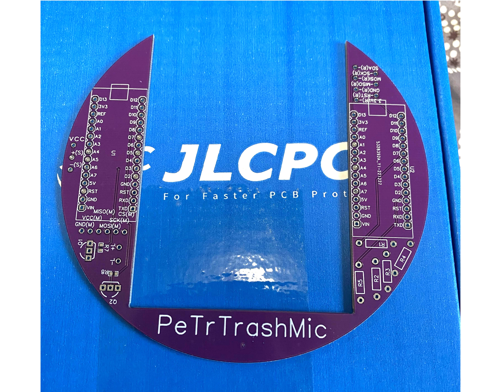
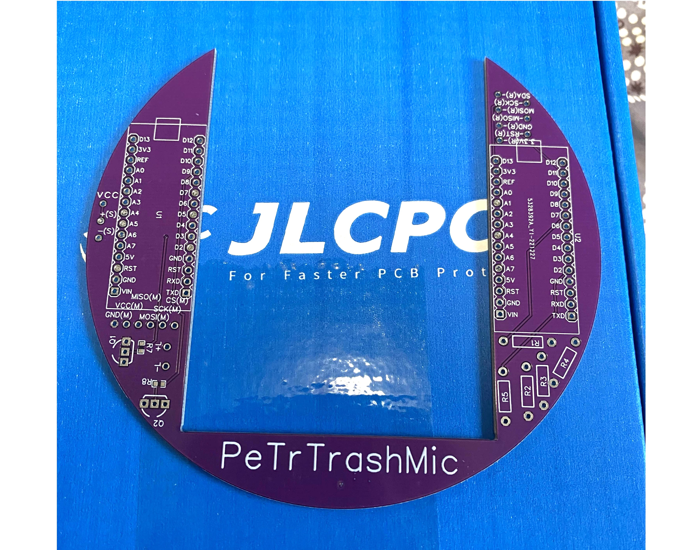

Project TrashMic


 

> This was a tribute project for my favorite podcast group, Trash Taste. The inspiration came from their logo, a trash can microphone. It doesn't just look cool, it lights up and comes with mini figures! When a figure is placed on the logo of the trash lid, the trash mic randomly plays a voice line from the show of the corresponding character.
> How does it work?: embedded in the trash lid is an RFID sensor that reads the unique RFID tags underneath each figure. This is read by an Arduino nano which tells another Arduino nano which figure was selected. The second Arduino then plays a random number generator to play a random audio clip from the SD-reader. Arduino 2 also turns on the LED during audio playback.
> The reason for using two Arduino's is because of incompatibility between the RFID reader and SD-card reader. The SD-card reader constaly communicated with the Arduino via the SPI protocol. Due to this, the RFID reader could not pass a signal or it would interrupt the SD-card reader. There are other remedies such as modifying the SD-card reader, however, it was simpler to use another Arduino and make the two Arduino's to communicate over regular I/O pins and matrixing (similar to techniques used in keyboards). This also ensured proper readings from the RFID sensor and SD-card reader without interference from each other (isolation).
> The main assembly is soldered to a custom PCB from JLCPCB, and placed at the bottom of the trash can body. The speaker is placed in the base of the mic stand. All wires were routed and hidden throughout the body.
> To this day, this is my most involved project, as it took the longest to design, prototype, and put together. It taught me a lot from PCB design to proper CAD practices. This will always be one of my favorite projects.